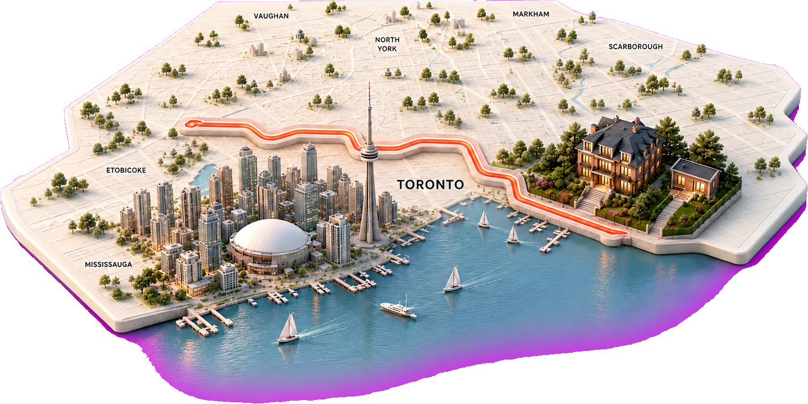

Founding homeowner01 / 04
Toronto / campaign pledge
I’m putting my backyard to work for Toronto.
One point becomes a movement02 / 04

A movement can start with one backyard.
Verified stage rail03 / 04
Move the file.
Move the project.
Move the project.
01
Pledged
02
Reviewed
03
Financed
04
Building
05
Home
Backyards for Canadians04 / 04

Verified outcome
Home +1
Put yours on the map.
Backyards for CanadiansFairLend
AI-generated voice • OpenAI TTS
A MOVEMENT CAN START WITH ONE BACKYARD.
PLEDGE IT. REVIEW IT. FINANCE IT. BUILD IT.
PUT ONE MORE TORONTO HOME ON THE MAP.